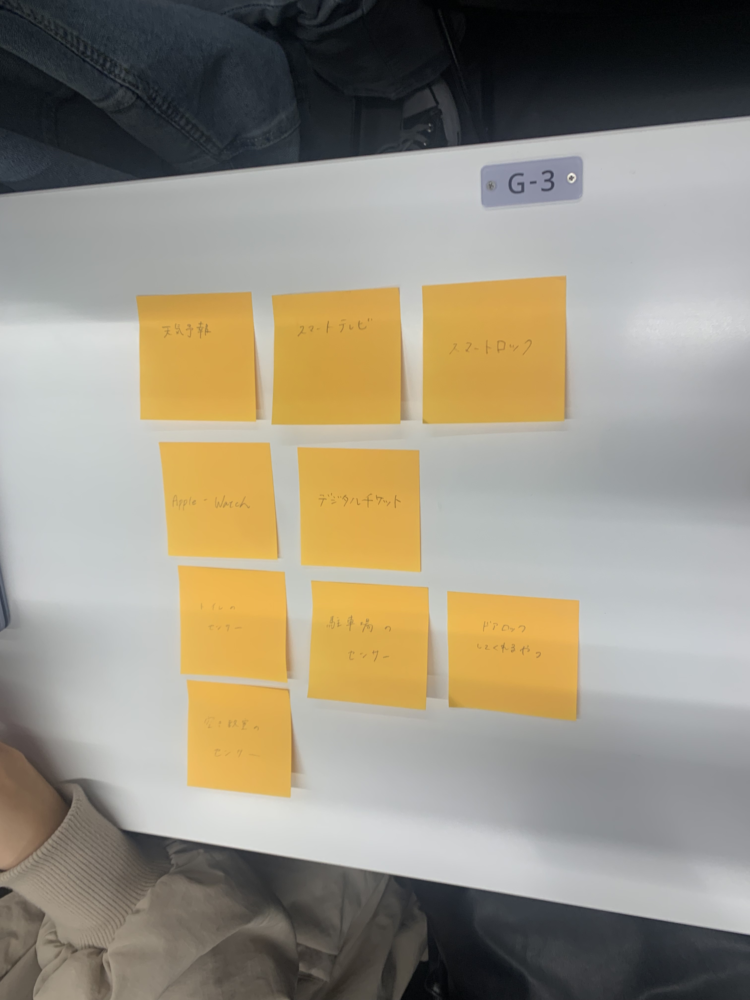
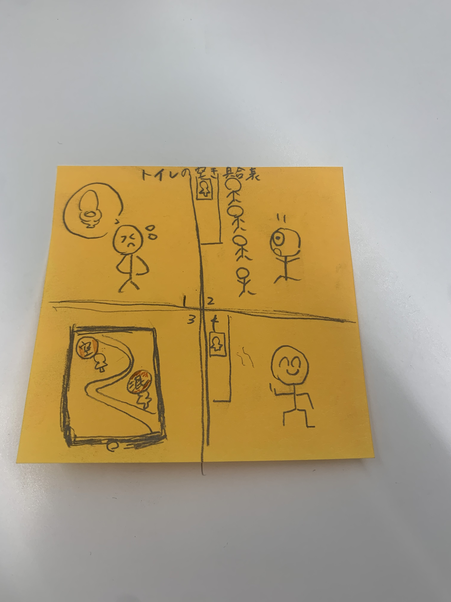
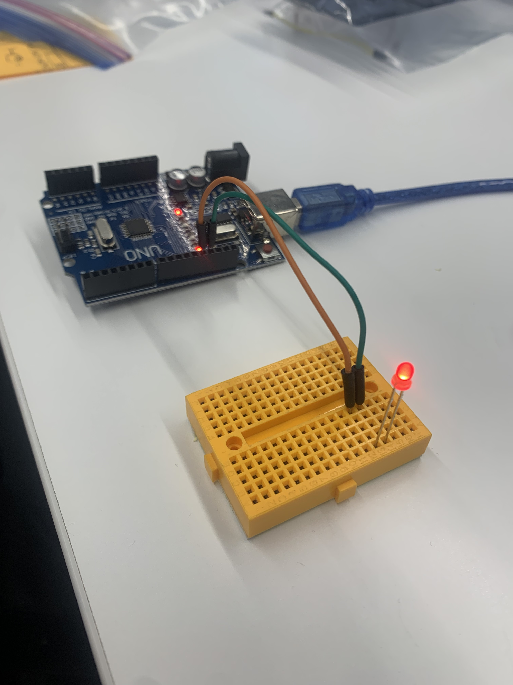
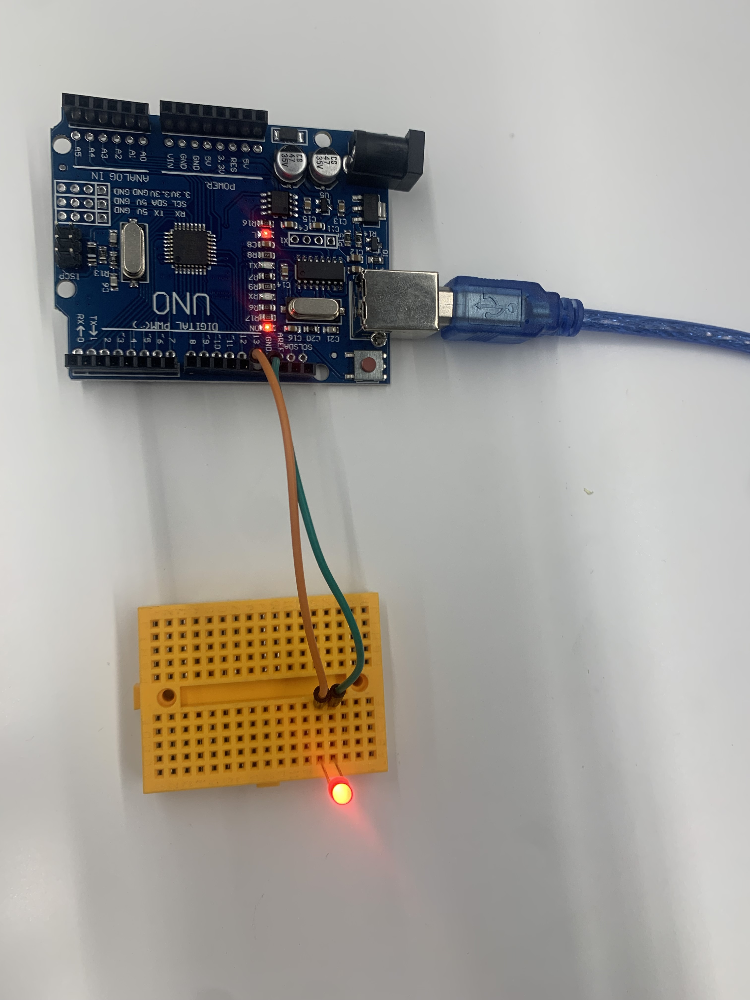

第1回
1.IoTとは何か
IoTは、Internet of Thingsの略語で、日本語では「モノのインターネット」とも呼ばれます。IoTは、インターネットに接続された様々な物理的なデバイスやセンサーを使用して、データを収集、交換、処理することができるネットワークです。
IoTには、様々な種類のデバイスが含まれます。例えば、家庭内で使用されるスマート家電や、自動車、健康管理デバイス、ビルの自動化システム、農業センサーなどです。これらのデバイスは、センサーや通信機能などの技術が組み込まれており、インターネットを介してリアルタイムに情報をやり取りすることができます。
IoTは、様々な分野で利用されており、ビジネス、医療、交通、農業、環境などの分野において、効率化や生産性の向上、省エネルギーなどの目的で活用されています。
2.IoTで何ができそうか？グループワークした内容

遠隔によってもっと便利になりそうな事柄を挙げた。
3.IoTで何ができそうか？自分で考えたアイディア
<

遊園地や街でトイレのに行きたいと思った時、予想外にその場所が混んでいたが、それ以外の場所はあまり混んでいなかったということがよくある。
そこで、自分の近くのトイレでどこが混んでいるのかがわかるものがあったら、より効率よく回転すると思い。今回このアイディアを考えた。
 